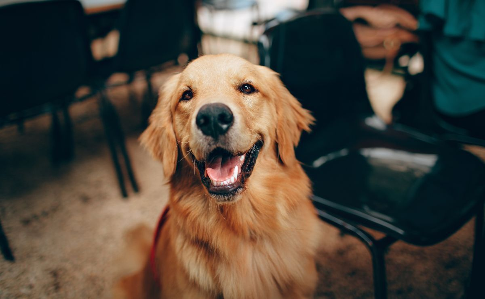
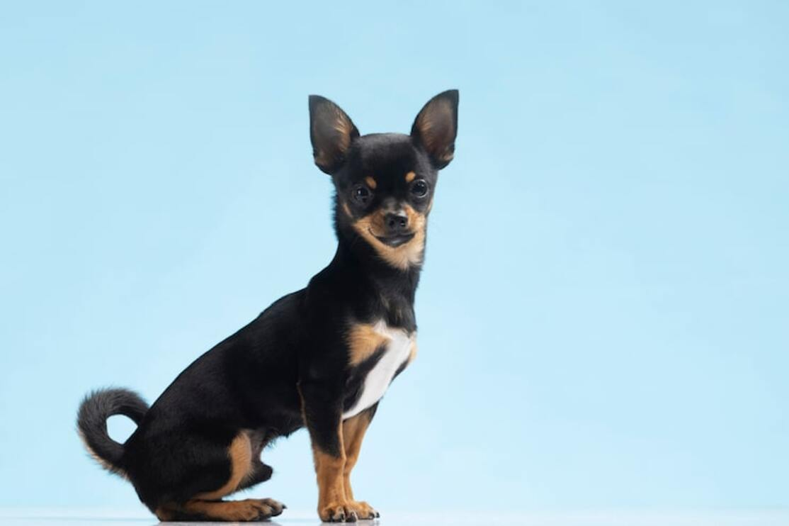
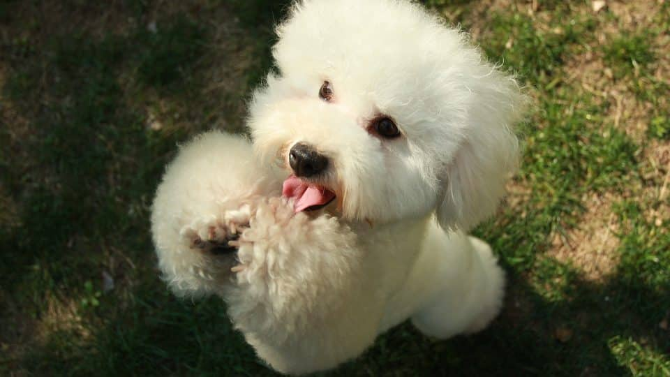

Tita

Tita, es una golden retriever muy activa que le gusta jugar mucho, lo que más destaca de ella es su pelaje dorado y suave. Además siempre está esperandote en la puerta para recibirte con todo el cariño que puede dar.

Tita, es una golden retriever muy activa que le gusta jugar mucho, lo que más destaca de ella es su pelaje dorado y suave. Además siempre está esperandote en la puerta para recibirte con todo el cariño que puede dar.

Franchesca, es una pincher muy terriorial, a pesar de su tamaño ella siempre está alerta y dispuesta a pelear por lo suyo; aun así es muy dulce y le gusta mucho que le soben la panza.

Cariño, es una bolita de pelo rizado que le encanta estar pegada a su dueña y su nombre se debe a lo cariñosa que es, no importa que sea alguien nuevo que llegó ella está dispuesta a estar junto a ti, jugar y darte mucho amor.